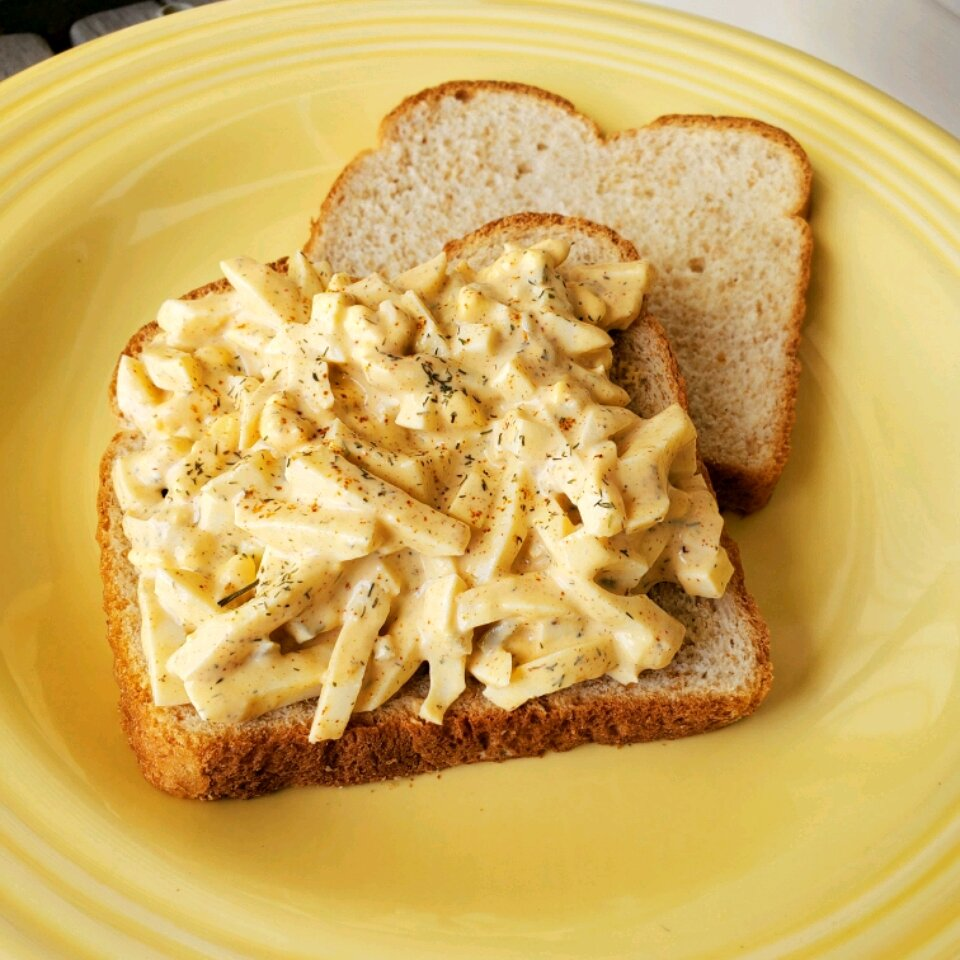

Magical Egg Salad

Egg salad is a dish made primarily of chopped hard-boiled or scrambled eggs, mustard, and mayonnaise, often including other ingredients such as celery.
It is made mixed with seasonings in the form of herbs, spices and other ingredients, bound with mayonnaise. It is similar to chicken salad, ham salad, macaroni salad, tuna salad, lobster salad, and crab salad.[1] A typical egg salad is made of chopped hard-boiled eggs, mayonnaise, mustard, minced celery and onion, salt, black pepper and paprika. A common use is as a filling for egg sandwiches. It is also often used as a topping for a green salad.[2
ingredients
- 5 eggs
- 3 tablespoons mayonnaise
- 2 tablespoons Dijon mustard
- 2 tablespoons sweet pickle relish
- 1 teaspoon steak sauce
- ¼ teaspoon paprika
- ¼ teaspoon dried dill weed
- salt and ground black pepper to taste
- 1 pinch cayenne pepper
Step 1
Place eggs in a saucepan and cover with water. Bring to a boil, remove from heat, and let eggs stand in hot water for 15 minutes. Remove eggs from hot water, cool under cold running water, and peel.
Step 2
Chop eggs and transfer to a large bowl.
Step 3
Stir mayonnaise, Dijon mustard, sweet pickle relish, steak sauce, paprika, and dill into eggs until well mixed; season with salt and black pepper. Cover and refrigerate until chilled, if desired.
Step 4
Sprinkle with cayenne pepper before serving.